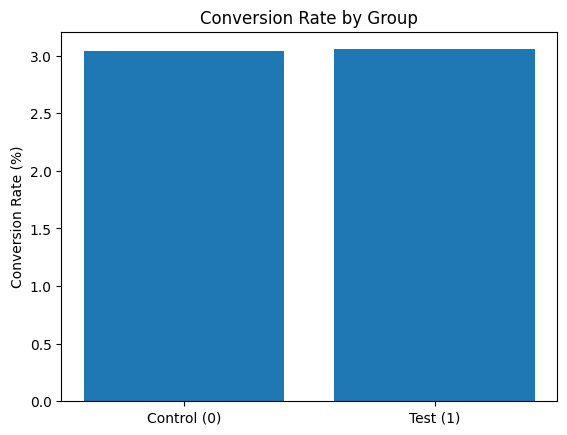
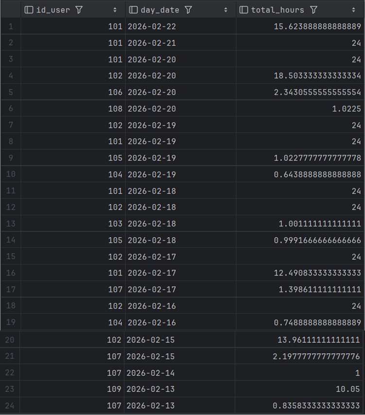

Code
import pandas as pd
import matplotlib.pyplot as plt
df = pd.read_csv("raw_data.csv")import pandas as pd
import matplotlib.pyplot as plt
df = pd.read_csv("raw_data.csv")Чи потрібно змінювати якісь типи?
df.dtypesid_user str
gender str
date_reg str
platform str
id_traffic_source str
country_group int64
age_group int64
system str
date_payment str
method str
amount float64
successful_payment float64
split_group int64
dtype: objectПеревела стовпці з датами у відповідний формат:
df['date_reg'] = pd.to_datetime(df['date_reg'], errors='coerce')
df['date_payment'] = pd.to_datetime(df['date_payment'], errors='coerce')df.columnsIndex(['id_user', 'gender', 'date_reg', 'platform', 'id_traffic_source',
'country_group', 'age_group', 'system', 'date_payment', 'method',
'amount', 'successful_payment', 'split_group'],
dtype='str')df.describe()| date_reg | country_group | age_group | date_payment | amount | successful_payment | split_group | |
|---|---|---|---|---|---|---|---|
| count | 58938 | 58938.000000 | 58938.000000 | 10238 | 10122.000000 | 10238.000000 | 58938.000000 |
| mean | 2021-07-15 19:50:25.008500 | 1.328617 | 2.989684 | 2021-07-25 00:13:28.277984 | 138.087253 | 0.665071 | 0.164291 |
| min | 2021-06-22 00:00:34 | 1.000000 | 1.000000 | 2021-06-22 00:17:19 | 20.145000 | 0.000000 | 0.000000 |
| 25% | 2021-07-02 00:44:11.500000 | 1.000000 | 2.000000 | 2021-07-10 13:38:52.750000 | 43.470000 | 0.000000 | 0.000000 |
| 50% | 2021-07-10 00:05:57 | 1.000000 | 3.000000 | 2021-07-25 23:35:46 | 104.170000 | 1.000000 | 0.000000 |
| 75% | 2021-07-28 18:26:31.500000 | 1.000000 | 4.000000 | 2021-08-08 19:21:00.250000 | 194.930000 | 1.000000 | 0.000000 |
| max | 2021-08-21 11:07:38 | 4.000000 | 5.000000 | 2021-08-21 10:02:55 | 335.340000 | 1.000000 | 1.000000 |
| std | NaN | 0.741689 | 1.203772 | NaN | 83.758981 | 0.471989 | 0.370543 |
Так як нам потрібні дані, які зібрані із нових користувачів, роблю наступну фільтрацію:
filtered_df = df[(df['date_reg'] >= '2021-07-24')]Значення кількості користувачів в кожній групі:
users_a = filtered_df[(filtered_df['split_group'] == 0)]['id_user'].nunique()
users_a8652users_b = filtered_df[(filtered_df['split_group'] == 1)]['id_user'].nunique()
users_b8513Цільові дії в кожній групі:
targeted_actions_a = filtered_df[(filtered_df['split_group'] == 0) & (filtered_df['successful_payment'] == 1)]['id_user'].nunique()
targeted_actions_a263targeted_actions_b = filtered_df[(filtered_df['split_group'] == 1) & (filtered_df['successful_payment'] == 1)]['id_user'].nunique()
targeted_actions_b260Тепер розрахуємо конверсію для кожної групи:
conversion_a = (targeted_actions_a / users_a) * 100
round(conversion_a, 2)3.04conversion_b = (targeted_actions_b / users_b) * 100
round(conversion_b, 2)3.05Графік конверсії для обох груп:
plt.figure()
plt.bar(['Control (0)', 'Test (1)'], [conversion_a, conversion_b])
plt.ylabel('Conversion Rate (%)')
plt.title('Conversion Rate by Group')
Можем побачити, що конверсія не дуже відрізняється. Далі я впишу наші отримані значення в AB test калькулятор.
 Отже, різниця між групами статистично незначуща (p-value > 0.05), нульова гіпотеза не відхиляється. Тому краще не впроваджувати зміни на всіх користувачів.
Отже, різниця між групами статистично незначуща (p-value > 0.05), нульова гіпотеза не відхиляється. Тому краще не впроваджувати зміни на всіх користувачів.
Тут я працювала із sheet “Emails Sent”
Спочатку я просумувала кількості імейлів та поділила на кількість інсталів для кожного рядка, де є повна когорта. Це дало результат кількості листів на 1 користувача.

І далі я порухвала середнє значення:

Тут я працювала із sheet “User Retention Rate”
Щоб порахувати скільки в середньому “живе” один користувач додатку, я вирішила спочатку знайти середнє значення по кожному тижню (стовпчику). Далі я використала формулу LT = 1 + R1 + R2 +….+Rn
Результат:

Щоб знайти скільки коштує утримання користувача за допомогою email розсилки впродовж одного року, я помножила середню кількість листів на одного користувача (яку я порахувала в пункті 1) на 0.1. Результат: 67,82$
Для знаходження CTR я використала формулу CTR = (Кількість кліків / Кількість віправлених імейлів) * 100
Результат: 
Можна побачити, що CTR різко впав на періоді 25-28 тижні. Це може бути через те, що тут менший життєвийй цикл у межах даних дат.
Створюбю таблицю

Вставляю можливі дані .png)
Роблю запит, який обробляє дані .png)
cleaned_actions - очищаю дані: залишаю лише записи з не-NULL id, id_user, action, date_action, і тільки action IN (‘open’,‘close’). Додаю SELECT DISTINCT, щоб прибрати дублікати однакових подій.
sessions - агрегую події в інтервали сесій на рівні (id, id_user): - start_time = найраніший open (через MIN) - time_end = найпізніший close (через MAX) Це дозволяє обробити кейси з кількома open/close в межах однієї сесії.
valid_sessions: - якщо close відсутній (time_end IS NULL), вважаю, що сесія триває до поточного моменту (CURRENT_TIMESTAMP); - відкидаю невалідні інтервали, де start_time >= end_time (наприклад, close раніше open). - ten_days - обмежую аналіз останніми 10 днями (включно з поточним): - обрізаю start_time знизу до (current_date - 9 days) - обрізаю end_time зверху до current_timestamp - залишаю тільки ті сесії, які реально перетинають цей період.
calendar - генерую календар останніх 10 дат (від today до today-9).
session_parts - розбиваю кожну сесію на денні частини, роблячи перетин інтервалу сесії з кожною добою через GREATEST/LEAST. Так враховуються сесії, що перетинають межі днів (наприклад, з 23:00 до 01:00)
Ну і у фіналі обираю та перевожу у години
Результат: 
Дуже довгі сесії можуть бути через те, що користувач відкрив застосунок, але не закрив його.
Також може бути можливий варіант, де є паралельні сесії одного користувача, потрібен етап мерджу інтервалів, щоб уникнути подвійного рахунку
Візуалізація, щоб побачити розподіл тривалості сесій по днях (У Tableau): 
Можемо побачити зростання сумарного часу онлайн до 18–19 лютого з подальшим спадом активності.